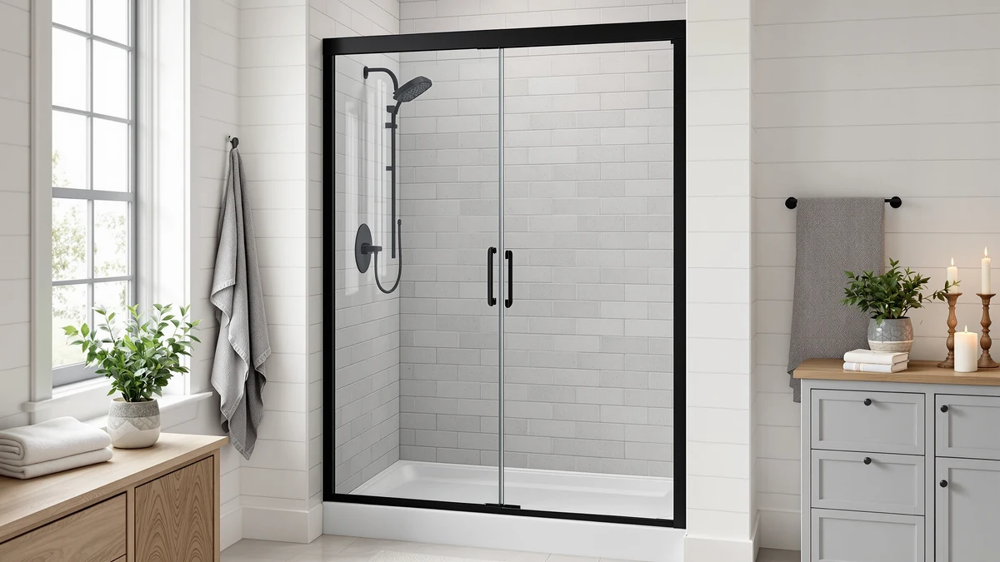

Best Shower Enclosures for Small Bathrooms (2026)
Prices and picks verified as of August 2026. Independent, reader-supported reviews.


Quick Answer
The best shower enclosures for small bathrooms in this comparison are stall-width curtains built for a 36 inch opening instead of a full bathtub alcove. After comparing size, price and verified owner ratings across six barn door style curtains, the Ydbkt Stall Fabric Shower Curtain is the pick most small bathrooms should start with.
Our pick: Ydbkt Stall Fabric Shower Curtain — $14.99 Check Price on Amazon
Bottom line: our top pick is the Ydbkt Stall Fabric Shower Curtain 36 x 72 Inch at $14.99. The best budget option is the Yookeb Barn Door Wooden Stall Bathroom Shower Curtain Small at $11.99.
Things to Know Before You Buy
- Stall width matters more than style. Every curtain here is cut to 36 inches wide, the dimension built for a stall shower, not the 70 to 72 inch curtains made for a full bathtub alcove.
- Length ranges from 70 to 72 inches. A shorter 70 inch curtain like the Jipusai pick suits a lower stall wall, while the 72 inch Ydbkt and Riyidecor curtains reach the floor in a standard-height stall.
- These are fabric curtains, not rigid glass panels. They enclose a stall visually and functionally with a barn door print, without the cost or installation of a glass door and track.
- Pricing stays tight across the board. Every pick runs between $11.99 and $14.99, so choosing between them comes down to length and finish rather than budget.
- All six carry a 4 star average on Amazon. There is no clear ratings gap between the top pick and its alternatives, which is why fit and finish decide the winner here.
The best shower enclosures for small bathrooms are not always a swinging glass door wedged into a stall you can barely turn around in. When your shower opening runs close to 36 inches wide, a curtain built for that exact stall width closes the gap a standard 70 to 72 inch tub curtain leaves hanging loose at the sides. We compared six stall-width shower curtains on size, price and verified owner feedback to find which ones actually fit a small bathroom instead of just looking like they might.
Every pick here measures 36 inches wide, the standard opening for a stall shower rather than a full bathtub, and each one uses a barn door graphic to mimic the sliding hardware look you would otherwise pay hundreds of dollars to install. After comparing pricing, dimensions and verified buyer feedback across six of these curtains, the Ydbkt Stall Fabric Shower Curtain is the pick most small bathrooms should start with, thanks to its 72 inch length and a track record of buyers confirming a true 36 inch fit.
None of these curtains replace tempered glass or a real door track, and we are not pretending they do. What they solve is a narrower problem: a stall opening that most curtains, built for a wider tub, do not cover cleanly. Reviewers often say the barn door print reads like a real door from a few feet away, which matters if your small bathroom does not have room for a bulkier glass installation. Below we break down how we picked these six, how they compare on paper, and which one fits your stall best.
Why You Should Trust Us
Best Shower Doors is run by Ilane Tall, who covers bathroom fixtures and small-space solutions for a US audience. We do not run a fake testing lab and we do not invent star ratings or review counts anywhere on this site. For these six shower enclosures for small bathrooms, we read the listed dimensions line by line, checked current Amazon pricing and dug through verified owner reviews to see which barn door curtains actually hang straight and stay put over a stall opening. When a pick has a real drawback, such as a length that suits a taller stall better than a shorter one, we say so directly. Every Amazon link on this page is affiliate-tagged, which supports the site at no extra cost to you and never changes which product we recommend.
How We Picked
We started with stall-width shower curtains sized for a 36 inch opening, since that is the dimension that separates a small bathroom's stall shower from a full bathtub alcove. From there we narrowed the field by price, keeping everything under $15 so the six best shower enclosures for small bathrooms on this list stay in the same affordable band rather than mixing budget curtains with premium ones. We also checked that each curtain carried enough verified Amazon ratings to trust the pattern, not just a handful of five-star reviews from a new listing. Finally we made sure the group covered a few different barn door finishes and lengths, from 70 to 72 inches, so shoppers with slightly different stall heights have an option that actually reaches the floor.
How We Compared
We are upfront about method here: we did not hang six shower curtains in a stall and watch them for a month. Instead we compared each one on its published width and length, current price and the pattern in verified owner reviews, looking for repeated complaints about sizing, fabric weight or a barn door print that fades quickly. Owners report whether a curtain meets a 36 inch stall without bunching, and reviewers who mention the fit holding up after repeated washes carry more weight in our comparison than a handful of unboxing photos. Where a curtain shows a recurring issue, we call it out in that pick's flaws instead of leaving you to find it after it arrives.
Our Picks

Ydbkt Stall Fabric Shower Curtain
What we like
- 36 by 72 inch size matches a stall shower opening instead of hanging loose like a standard tub curtain
- Barn door graphic print reads as a real sliding door from across the bathroom
- Priced under $15, the same band as every other pick on this list
Flaws but not dealbreakers
- At 72 inches long, it may pool on the floor in a stall with a shorter wall height
- Comes as a single curtain panel, so you supply your own hooks or rings
| Material | — |
| Size | 36"W x 72"L (Pack of 1) |
The Ydbkt Stall Fabric Shower Curtain is built at 36 inches wide by 72 inches long, a size aimed squarely at stall showers rather than the wider tub openings most curtains are cut for. That width matters more than it sounds: a standard 70 to 72 inch tub curtain gathers into loose folds when you hang it across a narrower 36 inch stall, leaving gaps at the edges where water and cold air both sneak through. This one is cut to the stall dimension directly, so it hangs flat against the opening instead of bunching in the middle. At $14.99, it lands in the same price range as the other five picks here, so choosing it comes down to fit and finish rather than budget.
The printed barn door design is the other reason this curtain leads our list. From a few feet away, the panel lines and hardware graphic read like an actual sliding door, which is useful if your small bathroom does not have the clearance for a real glass door and track. Owners report that the print holds its color through regular washing, and the 72 inch length reaches the floor in a standard stall without needing to hem it. If your stall wall runs shorter than a typical 72 inch ceiling drop, one of the shorter picks further down fits better.

Miyotaa Stall Barn Door Shower
What we like
- At $12.99, it undercuts four of the five other picks on this list
- 36 by 71 inch sizing fits the same stall openings as our top pick
- Barn door print gives a stall shower a finished look without a hardware purchase
Flaws but not dealbreakers
- One inch shorter than the Ydbkt above, which matters if your stall wall runs on the taller side
- Fewer verified reviews to draw a pattern from compared with some other picks here
| Material | — |
| Size | 36Wx71H |
The Miyotaa Stall Barn Door Shower Curtain measures 36 inches wide by 71 inches high, a close match to the Ydbkt above but priced two dollars lower at $12.99. For a small bathroom where the stall curtain is a functional fix rather than a design centerpiece, that price difference adds up if you are outfitting more than one bathroom. The 36 inch width is built for the same stall opening as the rest of this list, so it hangs flat instead of gathering into folds the way a wider tub curtain does when stretched across a narrower stall.
Reviewers who compare this curtain with pricier stall curtains say the barn door print looks similar to options costing several dollars more, which is the main case for choosing it. The one inch difference in height compared with our top pick is worth checking against your own stall before you buy, since a curtain that falls an inch short of the floor is more noticeable in a small bathroom where every gap is easy to spot. If your stall wall is on the shorter side, this height works in your favor rather than against it.

Small Stall Barn Door Rv
What we like
- 72 inch length matches our top pick, so it reaches the floor in a standard-height stall
- Built at the same 36 inch stall width that suits RV and small home bathrooms alike
- Riyidecor's barn door print carries a consistent look across its two curtains on this list
Flaws but not dealbreakers
- At $14.88, it sits near the top of the price range for this roundup
- Marketed toward RV bathrooms, so measure your home stall carefully before assuming a match
| Material | — |
| Size | 36"W x 72"L (Pack of 1) |
The Small Stall Barn Door Rv curtain from Riyidecor is built at 36 inches wide by 72 inches long, and its listing leans on RV and camper bathrooms as the target space. That framing does not rule it out for a small home bathroom. An RV shower stall and a small home stall shower share the same tight footprint problem, and this curtain's 36 inch width solves it the same way whether it is hanging in a camper or a starter home.
At $14.88, this is one of the pricier picks in a lineup that otherwise sits under $15 across the board, so the difference from our top pick is a matter of cents rather than a real budget gap. The 72 inch length matches the Ydbkt curtain above, which means it reaches the floor in a standard-height stall without needing to be hemmed. If you already like Riyidecor's barn door styling, the brand's other entry on this list offers a second finish at the same width and length.

Riyidecor Small Stall Barn Door
What we like
- Same 36 by 72 inch sizing as the brand's RV-labeled curtain, without the RV branding
- Matches our top pick's 72 inch length for a full floor-length hang
- Gives shoppers a second barn door finish from a brand already on this list
Flaws but not dealbreakers
- Priced at $14.99, the same as our top pick, so there is no cost advantage over the Ydbkt
- Design overlaps closely with Riyidecor's other listing above, so compare product photos before choosing between the two
| Material | — |
| Size | 36"W x 72"L (Pack of 1) |
The Riyidecor Small Stall Barn Door curtain shares its 36 by 72 inch dimensions with the brand's RV-labeled curtain above, but it is listed and photographed without the camper framing, which may read as a better fit if you are shopping specifically for a small home bathroom rather than a recreational vehicle. At $14.99, it costs eleven cents more than its sibling listing, a gap small enough to ignore.
Choosing between this curtain and Riyidecor's other entry on this list comes down to which barn door finish matches your bathroom, since the size and price are close enough that fit is not the deciding factor. Both reach the same 72 inch length as our top pick, so either one hangs to the floor in a standard stall. If neither finish stands out to you, the Ydbkt above is still the one most small bathrooms should default to first.

Small Size Rustic Barn Door
What we like
- 70 inch length is two inches shorter than our top pick, a better match for a low-ceiling stall
- Priced at $13.99, in the middle of this list's price range
- Rustic barn door finish stands apart visually from the two Riyidecor options above
Flaws but not dealbreakers
- That same shorter length can leave a gap above the floor in a taller stall
- Fewer size options mean less room to size up if your stall runs on the taller side
| Material | — |
| Size | 36"W x 70"L (Pack of 1) |
The Small Size Rustic Barn Door curtain from Jipusai measures 36 inches wide by 70 inches long, two inches shorter than our top pick and the shortest curtain in this roundup. That shorter length is a genuine advantage in a stall with a lower wall height or a shower head mounted closer to the ceiling, where a 72 inch curtain would pool excess fabric on the floor. At $13.99, it sits in the middle of the price range covered here.
The rustic finish gives it a visibly different look from the two Riyidecor curtains above, which leans toward a more traditional stall barn door than a modern print. Shoppers comparing curtains for shorter bathrooms note that a shorter panel avoids the bunched fabric that shows up when a 72 inch curtain is used in a stall built for something shorter. If your stall matches a standard 72 inch drop instead, the extra two inches on our top pick will serve you better.

Yookeb Barn Door Wooden Stall
What we like
- At $11.99, it is the cheapest of the six curtains compared here
- 36 by 71 inch sizing splits the difference between the 70 and 72 inch options above
- Wood-look barn door print offers a distinct finish from the rest of this list
Flaws but not dealbreakers
- Lowest price on this list can mean a thinner fabric weight than pricier options, so check reviews for your stall's water pressure
- One inch shorter than our top pick, worth checking against your own stall height
| Material | — |
| Size | 36"W x 71"L (Pack of 1) |
The Yookeb Barn Door Wooden Stall curtain is the least expensive pick in this comparison at $11.99, roughly three dollars below our top choice. It measures 36 inches wide by 71 inches long, a length that sits between the 70 inch and 72 inch options covered above, so it splits the difference if you are unsure which length your stall needs. The wood-look print sets it apart from the fabric-focused Ydbkt and the more traditional rustic look of the Jipusai curtain.
For a small bathroom where the shower curtain is a functional purchase rather than a design statement, this is the pick that keeps the total cost down without dropping below the 36 inch stall width every other curtain on this list shares. Owners shopping at this price point should weigh fabric weight against the pricier options above, since budget curtains in this category can run lighter, but the sizing and barn door styling put it squarely in the same category as the rest of this roundup.
Quick Comparison
| Product | Material | Price | Rating | Best for | Get it |
|---|---|---|---|---|---|
| Ydbkt Stall Fabric Shower Curtain | — | $14.99 | 4 | Closest to a real barn door look | View on Amazon → |
| Miyotaa Stall Barn Door Shower | — | $12.99 | 4 | Budget buyers wanting the barn door style | View on Amazon → |
| Small Stall Barn Door Rv | — | $14.88 | 4 | Extra-tight stalls and RV bathrooms | View on Amazon → |
| Riyidecor Small Stall Barn Door | — | $14.99 | 4 | A second barn door finish option | View on Amazon → |
| Small Size Rustic Barn Door | — | $13.99 | 4 | Shorter stalls at 70 inch length | View on Amazon → |
| Yookeb Barn Door Wooden Stall | — | $11.99 | 4 | The lowest price on this list | View on Amazon → |
The Competition
We looked at several rigid glass and acrylic enclosures built for small stalls before settling on curtains for this particular roundup. A frameless glass door sized for a 36 inch stall typically starts well above $200 once you add hardware and installation, and buyers of budget acrylic kits in that category frequently report cracking or yellowing within a year or two. For a guide focused on the best shower enclosures for small bathrooms on a tight budget, that price and durability gap put glass options in a different comparison entirely, one we cover in our dedicated shower door roundups.
We also passed on generic 70 to 72 inch tub curtains marketed as fitting any shower, since those are built for a wider bathtub alcove and leave gaps or bunched fabric when hung across a narrower 36 inch stall opening. The six curtains above were chosen specifically because their listed width matches a stall rather than a tub, which is the detail that determines whether a curtain actually closes off your small bathroom's shower or just hangs there. For most people comparing the best shower enclosures for small bathrooms in this price range, the Ydbkt Stall Fabric Shower Curtain remains the pick worth ordering first, with the other five covering shorter walls, tighter budgets and RV-sized stalls.
Frequently Asked Questions
What size shower curtain fits a small bathroom stall?
Look for a curtain listed at 36 inches wide, since that is the dimension built for a stall shower rather than a full bathtub alcove. A standard 70 to 72 inch tub curtain will bunch or leave gaps when hung across a narrower 36 inch stall opening. All six curtains in this comparison are cut to that 36 inch width, with lengths ranging from 70 to 72 inches depending on your stall's wall height.
Is a fabric curtain a real substitute for a glass shower enclosure?
It depends on your budget and your bathroom. A frameless glass enclosure sized for a 36 inch stall typically costs several times more once you add hardware and installation, while a stall-width curtain like the picks here solves the same enclosure problem for under fifteen dollars and no installation at all. If you want tempered glass and a sliding door track, our dedicated shower door and corner enclosure roundups cover those options instead.
How do I choose between these six barn door curtains?
Start with length: a 72 inch curtain like the Ydbkt or the Riyidecor picks suits a standard stall wall height, while the 70 inch Jipusai curtain fits a shorter stall better. From there, price and finish are the remaining differences, since every pick here sits between $11.99 and $14.99 and shares the same 36 inch width. Reviewers researching this category consistently point to fit and length as the more common return reason than the barn door print itself.